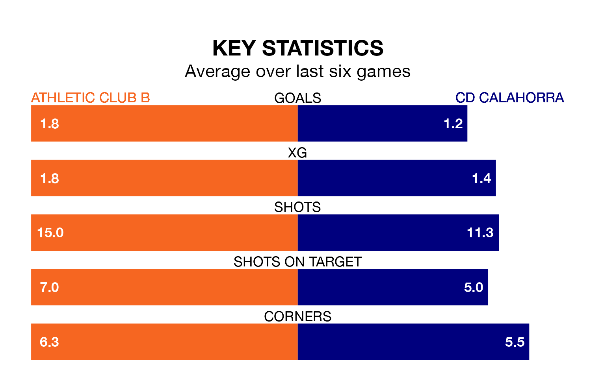

Athletic Club B host CD Calahorra on Saturday in the Segunda División RFEF Group 2.
In their last league match, on Sunday, Athletic Club B beat Barakaldo CF 2-1 away, with goals from Aingeru Olabarrieta Capelo and Urko Iruretagoiena Lertxundi.
Calahorra lost, 1-0 at home against UD Logroñés.
Athletic Club B are top of the table after 28 games, of which they have won 20 and drawn six, earning 66 points.
Calahorra are nine places behind the home team in 10th, with 10 wins and seven draws putting them on 37 points.
With 52 goals in 28 games so far this season, Athletic Club B are the league's second-highest scorers with 1.9 goals per game. And they are conceding fewer than average, letting in 14 goals at a rate of 0.5 per game.
The visitors, meanwhile, are below average scorers, with 0.9 goals per game, compared to a league average of 1.1. They have conceded 1.0 goal per game.
In the last 10 years, Athletic Club B and Calahorra have played each other on 11 occasions. Athletic Club B won six of them, Calahorra three, and they drew twice.
On average, Athletic Club B scored 1.7 goals and Calahorra 1.4 in those matches.
Their last meeting was on November 19, when Athletic Club B won 1-0 away.
Athletic Club B are in good form in the Segunda División RFEF Group 2, with four wins and a draw from their last six games.
With two wins and two draws over that period, Calahorra's form is worse – they have taken eight points from 18, compared to the hosts' 13.
Updated: 12:16 (UTC), 25/03/24